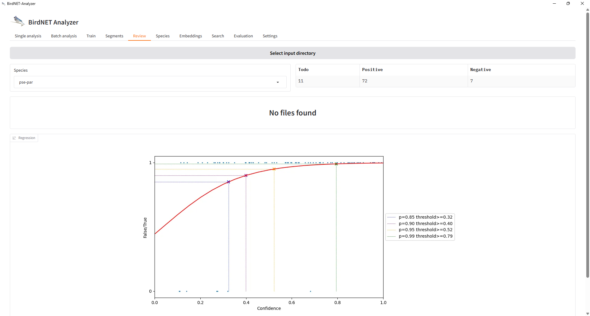
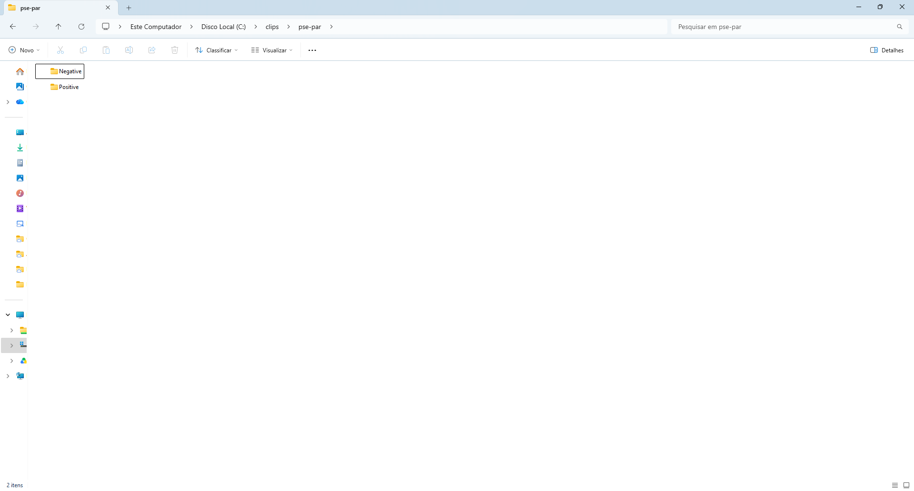
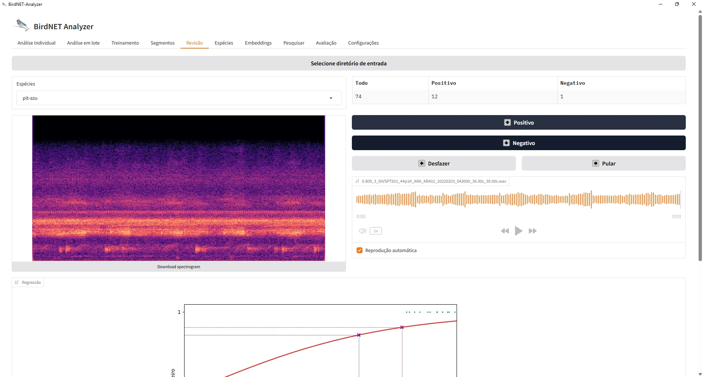
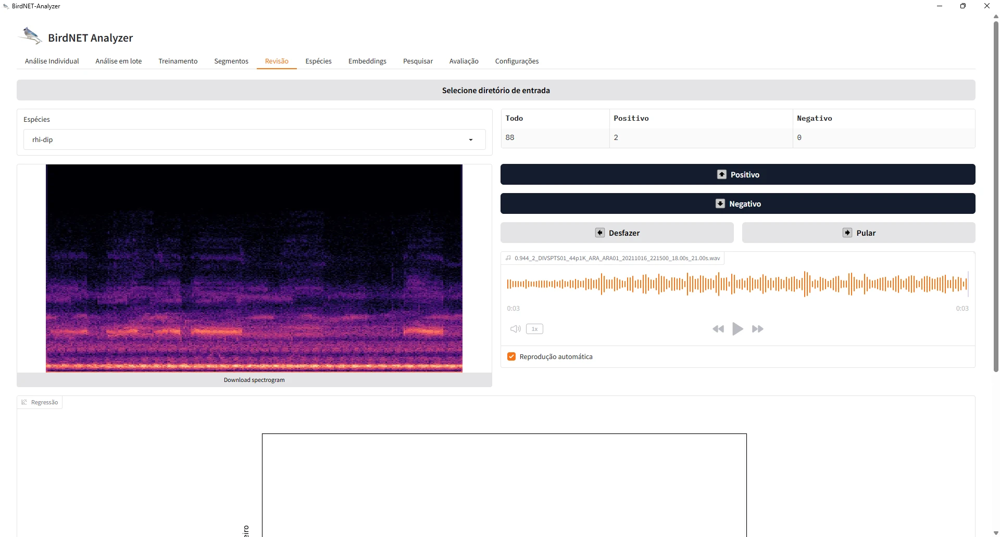
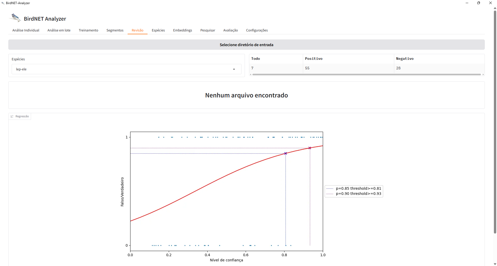

Reviewing clips in the BirdNET GUI
Source:vignettes/articles/reviewing-in-the-gui.Rmd
reviewing-in-the-gui.RmdThe manual review of stage 1 happens outside R, in the Review tab of
the BirdNET-Analyzer GUI. This article walks through that review, from
the folder of clips written by cut_clips() to the
Positive and Negative folders that
classify_review() reads back. The screenshots were taken
with GUI version 2.4.0 (model V2.4) on Windows, on clips of the FrogNet
project; the layout may differ in other versions. The GUI
documentation describes how to install and launch it, and states
that the Review tab implements the workflow of Wood & Kahl
(2024).
The folder of clips
extract_validation_clips() (or cut_clips())
writes one folder per species under clips/, each with the
clips to review. The name of a clip starts with its confidence score and
its rank, followed by the name of the source recording and the start and
end of the clip:

The GUI reads the species from the names of these subfolders.
Choosing the species
In the Review tab, Select input directory points the GUI to
the clips folder. The Species list then shows one
entry per subfolder, and the counters show the clips still to review
(Todo) and those already classified as Positive or
Negative:

Reviewing a clip
Each clip is shown as a spectrogram, with an audio player (with Autoplay, the clip plays as soon as it opens). The name of the clip, with its score, is shown above the waveform. Positive and Negative classify the clip and move to the next one; Undo reverses the last decision and Skip moves on without classifying:

Review the clip by listening to it, not only by its score: the score
is what the review is meant to check. For the random designs of
vignette("sampling-designs"), the order in which the clips
are reviewed does not matter, but every clip of a drawn occasion must be
reviewed (see vignette("crywolf-integration")).
The regression panel
Once clips have been classified, the Regression panel shows a logistic regression of the verdicts on the score for the selected species, with the scores at which the predicted probability of a true detection reaches 0.85, 0.90, 0.95 and 0.99:

This curve is a quick check during the review. It is fitted to one
species at a time, pooling every site, on the clips reviewed so far. The
calibration of stage 2 (calibrate(),
vignette("calibration")) fits the species and sites
together, lets the curve differ among them, compares the candidate
models by cross-validation and, with engine = "brms",
carries the uncertainty of the curve. Use the GUI curve to follow the
review, and the calibration of stage 2 for the analyses.
The result: Positive and Negative folders
The GUI moves each classified clip into a Positive or a
Negative subfolder of the species folder:

This is the structure that classify_review() and
post_validation() read. The verdict of each clip comes from
the name of the subfolder in which it is found, matched by the regular
expressions positive_pattern ("positiv" by
default) and negative_pattern ("negativ"),
case insensitive. A clip left in the species folder, outside
Positive and Negative (for instance when the
review was interrupted), is counted as not_reviewed; a clip
of the manifest not found at all, as clip_missing.
library(sheepdog)
res <- post_validation(review_dir = "C:/clips",
manifest_path = "C:/validation/clip_manifest.csv",
output_dir = "C:/validation/results")The interface in Portuguese
The GUI can be switched to Portuguese in its settings (the translation is by Larissa Sugai, according to the GUI documentation). The buttons become Positivo, Negativo, Desfazer and Pular, and the regression panel, Regressão:



With the interface in Portuguese, the GUI names the result folders
positivo and negativo instead of
Positive and Negative. The default patterns of
classify_review() ("positiv",
"negativ", case insensitive) match both, so the review can
be read back in either language, and clips reviewed partly in each
language end up in the right verdict. The regression panel of a species
with more false positives looks different: here the curve reaches 0.85
only at a score of 0.81, and 0.90 at 0.93, and the higher probabilities
are not reached within the range of scores:

Species like this are those that cell_status() flags as
unreliable at p_min = 0.95 (see
vignette("community-matrices")).
Several reviewers
When the clips are split among reviewers, each reviewer reviews their
own copy of the folder tree in the GUI. assign_reviewers()
splits the clips (with a fraction reviewed twice),
split_by_reviewer() copies them, and after the review
reviewer_agreement() and consensus_verdicts()
measure the agreement and combine the verdicts:
man <- assign_reviewers(read.csv("C:/validation/clip_manifest.csv"),
reviewers = c("ana", "bia", "caio"), overlap = 0.1)
split_by_reviewer(man, clips_dir = "C:/validation/clips",
output_dir = "C:/review")
# after each reviewer has reviewed C:/review/<reviewer> in the GUI
reviews <- lapply(c(ana = "ana", bia = "bia", caio = "caio"), function(r)
classify_review(man, file.path("C:/review", r)))
reviewer_agreement(reviews)
validation <- consensus_verdicts(reviews)Clips with conflicting verdicts get
verdict = "disagreement" and are left out of the precision
and the calibration until a consensus review settles them.
References
Wood, C. M., & Kahl, S. (2024). Guidelines for appropriate use of BirdNET scores and other detector outputs. Journal of Ornithology, 165, 777–782. https://doi.org/10.1007/s10336-024-02144-5